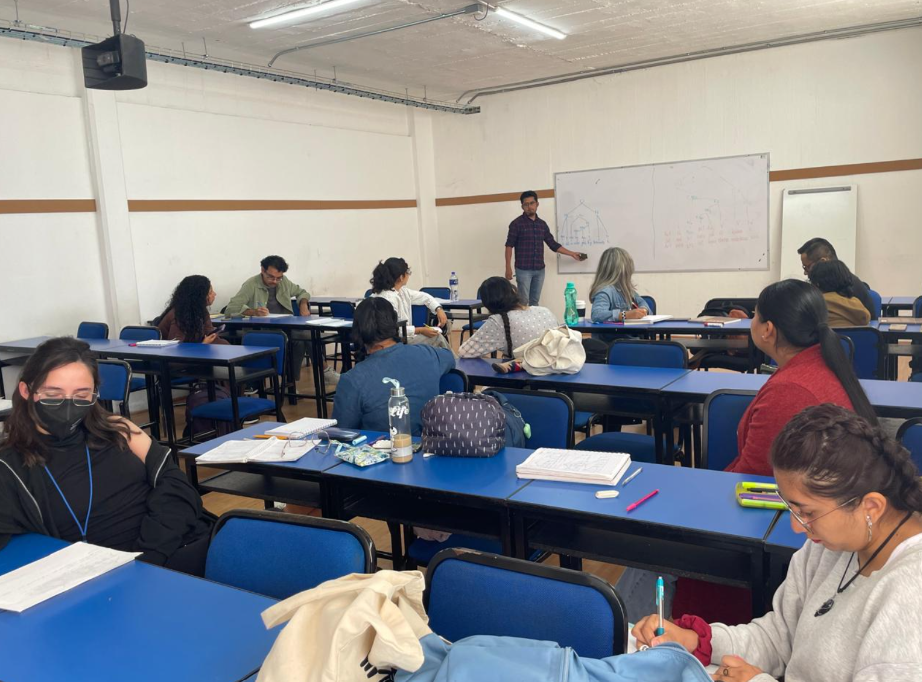
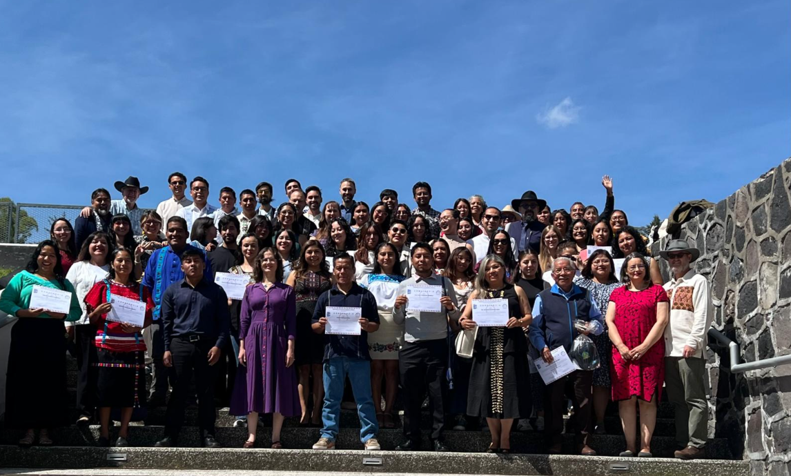
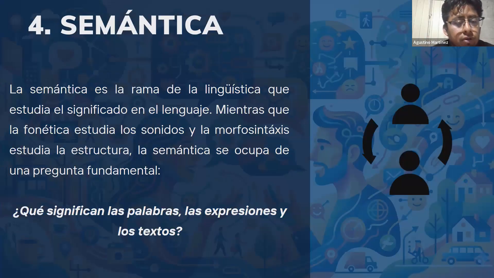
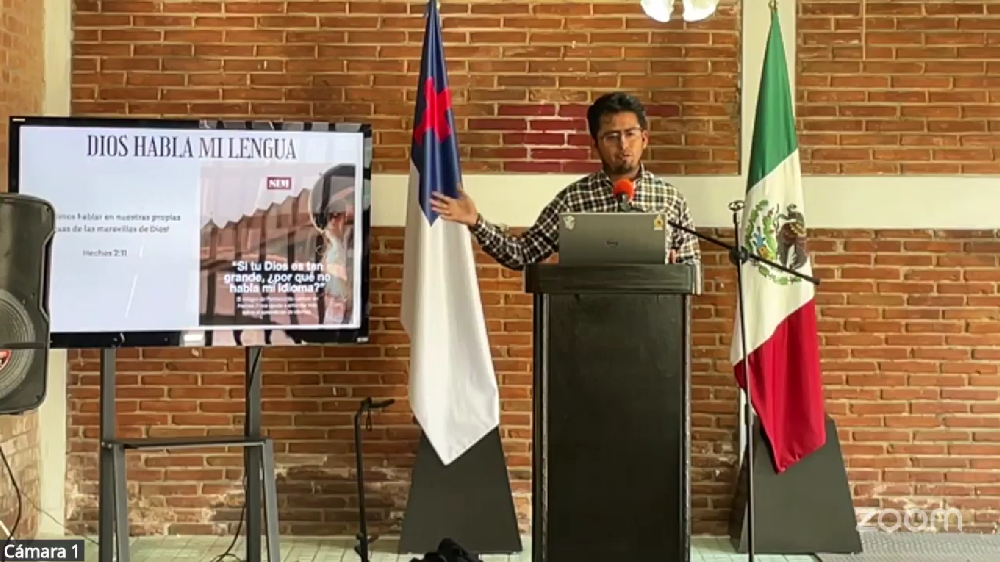
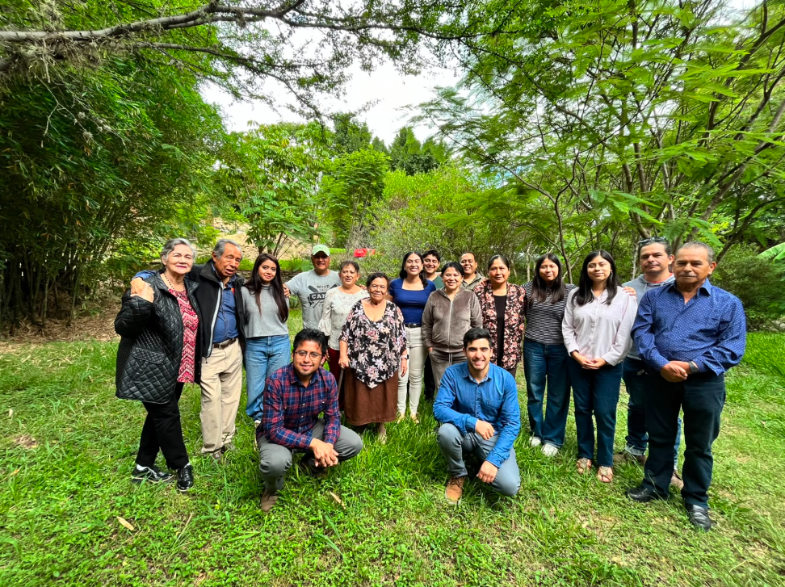
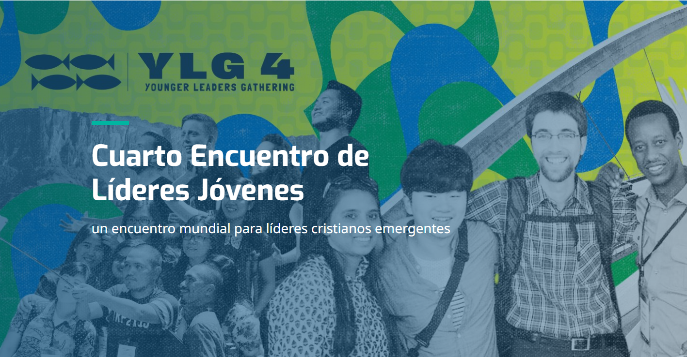

Boletín de Noticias
Jueves, 23 de julio de 2026, Sierra Mazateca, México.
Queridos hermanos, es un gusto saludarles nuevamente y compartirles lo que el Señor ha hecho durante estos días.
Versión en PDF
Descarga o visualiza esta carta de noticias en su formato original.
Traducción del NT al mazateco
Agradezco sus oraciones por el trabajo de traducción del Nuevo Testamento (NT). La próxima semana ya tendremos un presupuesto aproximado y comenzaremos la recaudación de fondos para la publicación. Que el Señor siga guiando cada detalle para que pronto los mazatecos puedan tener Su palabra impresa en sus manos.
Diplomado en Puebla
Después de un mes bastante agotador, pero de mucha bendición, pudimos culminar el Diplomado Internacional en Lingüística Aplicada, donde se capacitó a estudiantes de diversas edades, trasfondos y orígenes. Alrededor de doce de ellos son creyentes interesados en servir en las misiones y en la traducción (algunos de los cuales ya lo hacen); el resto tiene interés en diversas áreas de servicio en comunidades indígenas.

Quizás surja la pregunta de por qué los misioneros cristianos capacitamos a personas no creyentes en una universidad pública. La respuesta es que las comunidades indígenas deben estar preparadas para recibir la palabra del Señor en sus propios idiomas: necesitan usar su lengua, así como saber leerla y escribirla para tener contacto con las Escrituras traducidas. Al hacer esto, preparamos el terreno para la llegada del Evangelio, ya que muchas de las personas capacitadas, aunque no son creyentes, están contribuyendo a este propósito, aun sin saberlo.
Oremos por todos los estudiantes que participaron este año, para que el Señor los use como bendición en las comunidades indígenas. Ahora tenemos cuarenta personas más capacitadas, entre ellas, trece que irán pronto al campo misionero. Sigamos orando por este curso que bendice tanto a nuestra nación, para que las relaciones con la universidad anfitriona se mantengan e incluso mejoren.

Curso de Semántica para Alti
La semana pasada comencé el curso de Semántica para hermanos traductores de la Biblia de diferentes nacionalidades y lenguas; tenemos alumnos de México, Venezuela, Paraguay y Colombia, cada uno hablante de su lengua materna. Las دو primeras clases que impartí han sido de enorme bendición. Ver cómo los hermanos crecen en conocimiento y lo aplican en su trabajo es lo que me anima a seguir dando estas capacitaciones.
Oremos por cada hermano, para que todos puedan culminar el curso. Muchos enfrentan limitaciones como la falta de acceso a internet, fallas eléctricas o un menor dominio del español y de conceptos básicos de gramática. Con la ayuda del Señor, en las próximas semanas serán equipados con herramientas y conocimientos que les ayudarán a ejercer un mejor trabajo para Él.

Movilización
Durante mi estancia en la ciudad de Puebla tuve la enorme bendición de visitar distintas iglesias. Pude compartirles la palabra del Señor y, a su vez, fui grandemente bendecido por ellos. Las congregaciones en las que estuve por primera vez fueron la Iglesia Bautista Príncipe de Paz y la Iglesia Bautista Berea. Estoy sumamente agradecido de que me recibieran aun sin conocerme personalmente; mi oración es que sigan extendiendo el reino del Señor en su ciudad y hasta lo último de la tierra. La última iglesia que visité en Puebla fue la Iglesia Bautista Getsemaní de Cholula, a quienes compartí los avances del ministerio que el Señor me permite realizar. Como siempre, fue una bendición estar con ellos.

Posteriormente, viajé a la ciudad de Oaxaca, donde visité la Comunidad Cristiana "El Camino Oaxaca" para hablar sobre la misión de Dios y la necesidad de traducir Su palabra a diversas lenguas. Mi oración es que el Señor siga levantando a su iglesia en México para ir por los no alcanzados; es para mí un privilegio ser una herramienta en Sus manos.

Próximo Viaje al Perú
En la madrugada del sábado 25 de julio, vuelo nuevamente hacia el Perú para servir allá el resto del año. Durante los primeros tres días estaré entre los yáneshas, capacitando a un nuevo integrante del equipo que realizará la labor de retrotraducción. Después viajaré a otra parte de la selva para estar con los nomatsigengas, donde, junto a hermanos de la Iglesia Bautista Getsemaní de Cholula, estaremos sirviendo a la comunidad. Tras cuatro días allí, dejaré al grupo para volver cinco días más con los yáneshas.
Les ruego que oren por mí, para que el Señor me guarde, me sostenga y provea de todo lo necesario para esta primera etapa de mi estancia en Perú, este camino es de fe y confianza en el Señor, aunque humanamente ahora no dispongo de todos los fondos para estar allá, sé que él irá proveyendo como siempre lo ha hecho, voy esperando y confiando en Él.
Encuentro de Líderes Juveniles 2027
Les adelanto también que he sido nominado para participar en el encuentro mundial que el Movimiento de Lausana está organizando para el 2027 en Brasil. Este evento concentrará a 1200 líderes emergentes (de entre 25 y 35 años) de todo el mundo, con el fin de impactar la misión cristiana global de las próximas décadas. Por mi parte, integraré la mesa de Acceso Mundial a las Escrituras, para evaluar los avances y necesidades en esta área.
Ayúdenme a orar por esto, para que el Señor me use para Su gloria y honra, y para que Él provea los recursos necesarios. El viaje implicará una inversión de alrededor de 1500 dólares (aproximadamente 26,000 pesos mexicanos). Si el Señor pone en su corazón contribuir para este viaje, será de gran bendición.

Como siempre, queridos hermanos, es un gusto compartirles lo que el Señor sigue haciendo y Su obra entre las naciones. Somos un cuerpo, la Iglesia de Cristo, y como uno solo, juntos llevamos las Buenas Nuevas a toda nación, etnia y lengua, cada quien desde su trinchera. Mi servicio a Dios solo es posible porque ustedes me sostienen por medio de sus oraciones, palabras de ánimo y ofrendas; sin esta unidad, nada de esto se lograría, son instrumento en manos del Señor para mostrarme su fidelidad. Me despido deseando que nuestro Señor les retribuya grandemente por su amor y generosidad hacia mí.
Su hermano en Cristo,
Agustino Martínez
Motivos de Agradecimiento
- Por el avance en la traducción del NT al mazateco y la definición del presupuesto.
- Por la exitosa culminación del Diplomado y los 40 estudiantes capacitados.
- Por el excelente inicio del curso de Semántica.
- Por la cálida recepción de las iglesias en Puebla y Oaxaca.
- Por la fidelidad de Dios y cada persona/iglesia que sostiene este ministerio.
Peticiones de Oración
- Proyecto Mazateco: Provisión de fondos para impresión del NT.
- Nuevos Misioneros: Por los 13 estudiantes que irán al campo.
- Relaciones: Que se fortalezca el vínculo con la universidad pública.
- Alumnos Semántica: Superación de fallas técnicas y de idioma.
- Viaje a Perú: Protección y provisión faltante (aprox. 7,000 MXN).
- Lausana 2027: Guía de Dios y provisión de recursos (aprox. 1,500 USD).
"Si el Señor pone en su corazón el deseo de contribuir económicamente a este ministerio, puede hacerlo a través de los siguientes medios:"
Datos Bancarios
Contacto
agusmarvaz@gmail.com